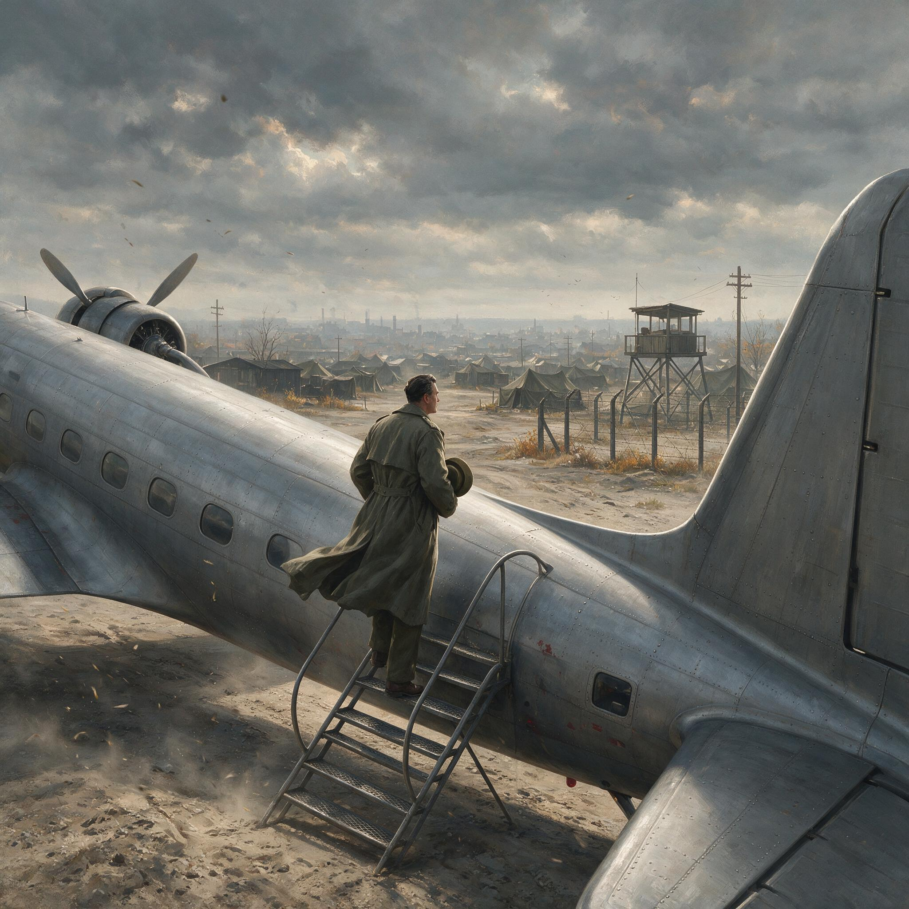

第 27 章
冷战铁幕下的记忆分流
台北的夏季潮湿闷热，总统府内的电风扇徒劳地搅动着黏稠的空气。1951年7月，国防部史政局的一位文职军官正伏案整理一份档案目录。他面前摊开的是1944年驻印军新三十八师在兰姆伽受训期

内战前夕昆明机场归国军官的迷茫
AI 生成插图，非史实影像。
间的训练记录——英文打字机打出的整洁页面，每一栏都填得一丝不苟：步枪射击合格率百分之九十七，迫击炮操作考核通过率百分之九十一，野战急救合格率百分之八十八。这份文件由美军教官签署，日期栏里盖着驻印军总指挥部的蓝色印章。同一张办公桌上，距这份英文档案不到三十厘米的地方，摆着一份用毛笔誊写的报告。报告来自云南保山，日期是1951年3月，内容是当地政府在清查过程中发现的一名原远征军士兵的材料。这名士兵姓刘，湖南邵阳人，1942年随新二十二师入缅，野人山撤退中活了下来，随后被空运到兰姆伽补充进新三十八师，参加了密支那战役和八莫战役。1945年回国，1946年被编入东北保安司令长官部，1948年在辽沈战役中被俘，经教育后释放返乡。
1951年春，他在一次群众大会上被指认，指认的理由之一是他曾在印度接受美军训练并与美军协同作战。两份文件并排放在一起，中间隔着不到三十厘米的距离。这份距离量得出任何一把尺子的长度，却量不出两套叙事体系之间正在裂开的鸿沟。那位文职军官的任务是编纂一部《国民革命军滇缅作战史》，他需要从眼前这些材料中选取可用的内容。他拿起钢笔，在英文训练记录上画了一个圈，标注“可采”；又拿起毛笔，在那份保山来的报告上同样画了一个圈，标注“存查”。
他并不知道，这两份文件在未来四十年里将分别进入两套完全不同的历史文本，一套只讲兰姆伽的训练成绩和与盟军的合作，另一套只讲野人山的死亡数字。而那个湖南邵阳籍士兵在兰姆伽学会操作迫击炮的具体过程，以及他在保山群众大会上被指认时的处境，将在这两套文本中同时消失。这就是1949年两岸分治格局形成之后，远征军历史记忆所进入的那条岔道。
它不是某一天突然裂开的，而是在此后十余年间，由两岸的史学机构、宣传机器和冷战意识形态共同劈开的。正如温斯顿·丘吉尔所言，一道“铁幕”已然落下，而远征军的记忆正被这道铁幕劈开。同一场战争、同一批士兵的经历，被分别纳入了两个截然不同的叙事体系，而这两种叙事都系统性地回避了远征军士兵个体的真实遭遇。
台湾方面的工作启动得更早，也更有组织。1950年6月朝鲜战争爆发后，美国第七舰队驶入台湾海峡，台北一夜之间从风雨飘摇的败退政权变成了冷战格局中的“自由中国”前哨。这个转变来得如此之快，以至于国民党当局需要用一切可用的话语资源来巩固这个新的政治定位。
远征军的历史——尤其是驻印军那段与美军深度合作的经历——恰好提供了现成的叙事素材。1951年，国防部史政局开始系统编纂远征军战史。编纂工作的指导原则在一份内部文件中写得非常清楚：着重表现中美军事合作之成功经验，彰显中国军队现代化之成就，以强化当前中美同盟之历史渊源。注意这句话里的每一个词：“合作”“现代化”“同盟”“渊源”。
这不是在写历史，这是在为一场正在进行中的冷战结盟寻找历史合法性。远征军的历史被从1942年到1945年的完整时间线中截取出来，切掉了野人山撤退的溃败——那一段涉及指挥混乱和英军背弃，不便多提——也切掉了1946年以后被投入内战的部分——那一段涉及国民党自己的决策失误，同样不便多提。
被保留下来并加以放大的，是兰姆伽整训、密支那战役、芒友会师这几个节点。在这几个节点上，中美两军确实并肩作战，确实取得了胜利，确实体现了一支传统军队在美式训练和装备下实现现代化的可能。1953年，这部战史以《国民革命军滇缅作战史》为题正式出版。
书中的叙事结构清晰得像一份外交照会：中国士兵勇敢坚韧，美国盟友慷慨援助，双方精诚合作，共同击败日本侵略者。史迪威的形象被精心修饰过——他与蒋介石的矛盾被轻描淡写地处理为“个性差异”，他对中国士兵的高度评价则被反复引用。斯利姆《反败为胜》中关于中国驻印军作战能力的段落被摘译出来，作为盟邦评价的佐证。
而日军《战史丛书·缅甸作战》中承认中国军队战斗力提升的记录，则被用来证明连敌人也不得不承认中国军队的强大。这套叙事在台湾的中学历史教科书中被进一步简化和固化。1950年代中期的台湾中学历史课本中，远征军的内容出现在“抗战胜利”一章里，篇幅不长，但位置显要。课文将远征军的历史锚定在“抗战胜利”的框架内，切断它与随后内战的联系；
将“美式训练”和“装备精良”作为正面价值加以强调，暗合当时台湾对美援的依赖；用与盟军并肩作战建构一种国际合法性，暗示国民党政权始终是国际反法西斯阵营的一员，如今也理应是国际反共阵营的一员。
这套叙事中几乎没有士兵个体的位置。兰姆伽训练营里那名湖南兵学会操作迫击炮的具体过程——他第一次摸到美制M2迫击炮时的手指发抖，他在靶场上打出第一发炮弹时耳膜的刺痛，他在考核通过后领到的那份额外配给的牛肉罐头——这些细节进不了战史，因为战史不需要这些。战史需要的是合格率、通过率、战斗力指数。
士兵个体的经历被抽象成统计数据，而这些数据又被用来支撑一个更大的政治叙事：中国军队在美国帮助下实现了现代化，因此中美合作是正确的、必要的、应当继续的。在台湾官方叙事的光亮照不到的角落里，另一批远征军老兵正在经历一种截然不同的历史处境。他们不在兰姆伽的训练场上，不在密支那的阵地上，他们在泰缅边境的丛林里。
这批人就是后来被称为“孤军”的部队。他们的来源复杂：一部分是原远征军第九十三师的残部，1942年第一次入缅作战失利后撤入滇西，1945年又随国民党军进入越北受降，1946年被调往滇南，1949年国民党在大陆全面溃败后，这支部队辗转退入缅甸境内；另一部分是原第八军和第二十六军的残部，1950年初在滇南战役中被击溃，残部由李弥等人率领，越过中缅边界进入缅甸掸邦。这两股力量在缅北汇合后，形成了一支约一万五千人的武装力量，控制着缅北萨尔温江以东的大片区域。台北对这支武装的态度经历了一个微妙的转变。
1950年初，国民党政权刚刚败退台湾，自身尚且难保，对这支流落在缅甸的残部并无明确政策。但朝鲜战争爆发后，形势骤变。美国中央情报局开始关注这支武装——他们驻扎在中缅边境，距离中国西南腹地不远，如果加以利用，可以成为牵制中共力量的一枚棋子。1951年，中情局通过其在曼谷的站点与孤军建立了联系，开始提供武器、通讯设备和资金。
台北迅速捕捉到了这个信号。1951年秋，李弥被任命为“云南省反共救国军总指挥”，从台湾飞抵曼谷，随后进入缅北，接管了这支武装的指挥权。这个任命的政治含义极为清晰：一支原本是因为战败而流落异国的国民党残军，被重新定义为“反共前哨”，其存在和行动被纳入了冷战框架下的“自由中国”叙事。这个重新定义的过程，本质上是对历史的又一次截取和改写。孤军中的许多士兵确实有过远征军的经历——第九十三师曾参加第一次入缅作战，第八军的部分官兵也曾隶属于远征军序列。
但他们的这段经历在1950年代台湾的官方叙事中被赋予了全新的意义：他们不是在溃败中流落异国的残兵，而是奉命留守的反共先锋；他们不是被历史洪流冲到岸边的弃子，而是“自由中国”伸向大陆的一只手臂。1953年，台湾国防部出版了一本名为《滇缅边区反共义军奋战史》的小册子。这本小册子的叙事策略与《国民革命军滇缅作战史》一脉相承，但更加激进。
它不再局限于抗战时期的远征军历史，而是将1942年到1945年的抗日作战与1950年以后的“反共作战”连接起来，构建了一条从“抗日”到“反共”的连续叙事线。在这条线上，远征军的老兵被塑造成一种跨越两个时代的英雄形象：他们曾经在缅甸丛林中与日本侵略者浴血奋战，如今又在同一片丛林中与共产主义势力继续战斗。
这种叙事巧妙地将冷战意识形态嫁接到了抗日战争的历史记忆上，使得远征军的历史不再是过去时，而是一个仍在进行中的使命。但真实情况远比小册子描述的要复杂和残酷。孤军在缅北的处境极其艰难。
他们远离家乡，身处异国，补给匮乏，疾病流行。台北提供的援助时断时续，美国中情局的支持也随着政策调整而波动不定。1953年，缅甸政府向联合国提出控诉，指控台湾当局侵略其领土。在国际压力下，台北不得不开始从缅北撤出部分部队。1953年11月至1954年3月，约七千名孤军官兵及家属被空运到台湾。
但仍有数千人留了下来——有的是因为不愿离开已经生活了数年的土地，有的是因为台北暗中希望保留这支力量作为未来反攻大陆的棋子，还有的仅仅是因为没有人通知他们撤退的时间和地点。留下来的人继续在缅北丛林中进行着一种无人承认的战争。
他们攻打过云南边境的解放军哨所，也参与过缅甸政府军与当地少数民族武装之间的冲突，还曾卷入金三角地区的鸦片贸易。到了1950年代末，这支武装已经演变成一种复杂的混合体：它既是一支政治军事力量，也是一个武装移民集团，同时还是金三角毒品经济的一部分。而台北官方叙事中那个“反共义军”的形象，与这种复杂现实之间的差距越来越大。
1961年，一个名叫马老四的湖南籍老兵在泰缅边境的一个小村庄里住了下来。他原是第九十三师的一名上等兵，1942年随部队入缅，那一年他十九岁。
此后二十年，他再也没有回过中国。1953年那次大撤退时，他所在的连队驻扎在一个偏远的山区据点里，没有收到撤退命令。等他们得知消息赶到集结点时，最后一架运输机已经飞走了。马老四和二十几个战友在缅北又游荡了八年，打过仗，种过鸦片，替当地土司当过保镖，最后辗转流落到泰缅边境。
1961年，他在一个叫湄索的泰国边境小镇附近定居下来，娶了一个当地华裔女子，开始种地为生。马老四不识字，他不知道台北出版的那些战史小册子里写了什么，也不知道北京的历史教科书里怎么写远征军。他只知道一件事：他当年在兰姆伽受训时学会的那几句英文——Left turn, right turn, about face, forward march——在泰缅边境的丛林里毫无用处。
而他最想记住的湖南老家方言，却因为二十年不说，已经变得生疏了。就在马老四在湄索定居的同一年，北京的一家出版社出版了一本小册子，其中有一段专门讨论美国在抗日战争时期的对华关系。文中提到了远征军，将国民党当局将数万中国士兵送往印度接受美军训练的行为定性为使其成为美国的附庸军，称这些士兵在缅甸战场上为英美充当炮灰，伤亡惨重。
在同一章的另一段里，作者引用了野人山撤退的死亡数字，指出数万中国士兵在撤退途中饿死、病死、坠崖而死，而英美军官则乘飞机先行撤离。这两段话被放在同一页上，形成了大陆官方叙事对远征军的标准表述：远征军士兵是受害者——既是国民党当局的受害者，也是美国的受害者——而他们的牺牲证明了这两个敌人的罪恶本质。大陆方面的远征军叙事构建过程，与台湾方面同样具有明确的政治功能，只是方向截然相反。
1950年抗美援朝战争爆发后，美军成为中华人民共和国在战场上的头号敌人。在这一背景下，任何与美军有过合作的历史都必须被重新审视和定性。正如材料所揭示的，1949年毛泽东领导的中共在中国内战中获胜；1950年1月，苏联及新成立的中华人民共和国承认越南民主共和国，美英随即承认越南国作为回应；
同年2月，《中苏友好同盟互助条约》签署。这些事件促使美国调整立场，将这场战争视为反共斗争的另一条战线。美国官方宣称印度支那乃至整个东南亚都具有战略重要性，将遏制共产主义于中国南方边境、以及后来的朝鲜半岛，列为美国外交优先事项之一。
当时美方视共产主义为受苏联主导的统一阵营，美国担忧：若胡志明取胜，越南将建立亲苏政权，最终由莫斯科操控越南事务。这种预期推动美国通过《共同防御援助法案》支援法国。1950年5月，中共占领海南岛后，美国总统杜鲁门开始秘密批准直接向法国提供财政援助；同年6月27日，朝鲜战争爆发，杜鲁门公开宣布美国正在实施这一援助。
远征军作为一支曾与美军深度合作的部队，其历史地位在革命史观中变得极为尴尬。它不能完全被否定——因为远征军的士兵是中国人，他们的牺牲是真实的——但也不能被正面评价，因为正面评价意味着承认与美国合作具有某种合理性。
远征军作为一支曾与美军深度合作的部队，其历史地位在革命史观中变得极为尴尬。它不能完全被否定——因为远征军的士兵是中国人，他们的牺牲是真实的——但也不能被正面评价，因为正面评价意味着承认与美国合作具有某种合理性。解决这个困境的办法是将远征军的历史拆解成两个部分：士兵的牺牲与指挥层的罪恶。
士兵是好的，他们勇敢、坚韧、爱国；指挥层是坏的，他们腐败、无能、卖国。这种二元叙事使得大陆官方可以在同情士兵的同时谴责国民党当局和美国，从而将远征军的历史纳入革命史观的框架。在这个框架中，远征军的牺牲不是用来证明中国军队的现代化成就——那是台湾叙事的重点——而是用来证明旧政权的腐败无能和帝国主义的侵略本质。
1955年，人民出版社出版了《抗日战争时期的国民党战场》一书。这本书是大陆方面第一部系统论述国民党正面战场的著作，其中有一节专门讨论滇缅战场。
书中的叙事逻辑非常清晰：首先，承认远征军士兵的英勇和牺牲，指出广大士兵在极端艰苦的条件下表现出了高度的爱国精神；
其次，将失败的责任归于蒋介石和国民党高层，认为由于国民党当局的腐败无能和对美国的依赖，远征军遭受了不应有的惨重损失；
最后，得出结论——只有在中国共产党的领导下，中国人民才能真正捍卫国家主权和民族尊严。这套叙事在此后二十年间不断被重复和强化。1960年代初期，大陆出版了一系列关于抗日战争的历史读物，其中但凡涉及远征军的内容，几乎都遵循同样的模式。
野人山撤退被反复书写——因为这是一个最能体现国民党当局腐败无能的事件：数万士兵在丛林中死去，而他们的指挥官要么乘飞机逃走，要么坐着轿子撤退。兰姆伽整训则被刻意淡化——因为承认美军训练的有效性会削弱“美帝国主义是纸老虎”的论断。至于驻印军在密支那、八莫等战役中的胜利，要么被一笔带过，要么被归功于广大士兵的英勇战斗，而美军提供的火力支援和后勤保障则被解释为帝国主义利用中国士兵当炮灰。
两岸的史学机构和宣传机器就这样各自从远征军的历史中截取了符合当下政治需要的片段。台湾强调驻印军与美军的合作以强化同盟想象，大陆则突出远征军在野人山的牺牲以佐证国民党当局的腐败无能。两种叙事看似对立，却有一个共同的结构性特征：它们都系统性地回避了远征军士兵个体的真实遭遇。这不是偶然的。
宏大叙事的天性就是吞噬个体经验。无论是“中美合作”的叙事还是“反帝斗争”的叙事，都需要将士兵抽象成数字、类型和符号。台湾战史中的“合格率百分之九十七”和大陆出版物中的“数万士兵伤亡”，本质上都是同一套操作：将活生生的人变成论证的工具。而那个在兰姆伽训练营里学会操作迫击炮的湖南兵——他叫什么名字？
他来自哪个村庄？他学会操作迫击炮的那个下午吃了什么？他后来去了哪里？是死在密支那的巷战里，还是活着回到了家乡？如果活着回去，他在1951年保山县的那次群众大会上说了什么？他的眼睛看着哪里？他的手放在什么地方？——这些细节在两套宏大叙事中都找不到安放的位置。
同样找不到位置的，还有野人山撤退中那个炊事员分掉最后一把米的瞬间。那是1942年6月，新二十二师穿越野人山的途中。部队已经断粮多日，每天都有士兵倒在路边再也站不起来。
炊事班还剩最后一把米——不是一袋，是一把，能握在掌心里的那么一小把。炊事员把米分成几份，分给了班里的战友。他自己没有留。两天后他死了，死于饥饿引发的器官衰竭。没有人知道他的名字。战后也没有任何一部战史记录下这个瞬间。它太微小了，进不了宏大叙事。
但它恰恰是远征军士兵个体经验中最真实的部分：不是“合格率百分之九十七”，不是“数万士兵伤亡”，而是一个具体的人，在具体的时刻，做出了一个具体的决定，然后死了。这种记忆分流造成的后果是深远的。它意味着远征军的历史被切割成了两套互不相通的文本，每一套文本都声称自己在讲述真相，但每一套文本都只讲了真相的一半——或者说，每一套文本都只讲了对当下政治有用的那一半。
而士兵个体的经历，那些无法被纳入任何政治叙事的细节，那些既不能证明“中美合作”也不能证明“反帝斗争”的瞬间，在两套文本中同时消失。到了1960年代中期，这种分裂已经固化成了制度性的存在。在台湾，国防部史政局继续出版各种战史资料，每一次出版都在强化“中美合作”的叙事框架。1964年，《驻印军战史》出版，全书超过六百页，详细记录了兰姆伽整训的每一个环节：训练科目、考核标准、装备清单、后勤补给。
但书中没有一个章节讨论士兵的家庭背景、文化程度、心理状态或战后去向。士兵是这部战史的工具，不是它的主题。在大陆，情况则更为复杂。
1966年“文化大革命”开始后，所有涉及国民党正面战场的历史研究都被迫中断。远征军的历史进入了一个更深的沉默期——不是被批判，而是被遗忘。在革命样板戏和阶级斗争叙事占据绝对主导地位的年代里，一支曾经与美国军队并肩作战的国民党部队的历史，连作为批判对象的价值都没有了。它从历史书写中彻底消失，仿佛从未存在过。
而在泰缅边境的那个小村庄里，马老四继续种他的地。他不知道台北出版了六百页的《驻印军战史》，也不知道北京的革命群众正在焚烧一切与美国有关的东西。他只知道自己的左膝盖每逢雨季就疼得厉害——那是1944年在密支那被炮弹碎片击中的旧伤。
有时候，村里的小孩会问他：爷爷，你以前是做什么的？他会沉默一会儿，然后用已经不太流利的湖南话说：当兵的。再问：在哪里当兵？他说：很远的地方。他从不提“远征军”三个字。不是因为害怕什么，而是因为这三个字在泰缅边境的丛林里没有任何意义。
而在泰缅边境的那个小村庄里，马老四继续种他的地。他不知道台北出版了六百页的《驻印军战史》，也不知道北京的革命群众正在焚烧一切与美国有关的东西。他只知道自己的左膝盖每逢雨季就疼得厉害——那是1944年在密支那被炮弹碎片击中的旧伤。有时候，村里的小孩会问他：爷爷，你以前是做什么的？他会沉默一会儿，然后用已经不太流利的湖南话说：当兵的。再问：在哪里当兵？
他说：很远的地方。他从不提“远征军”三个字。不是因为害怕什么，而是因为这三个字在泰缅边境的丛林里没有任何意义。1968年，缅甸政府推行新的外侨登记政策，要求所有在缅外国人必须申请外侨登记证。滞留在缅北的原远征军老兵面临一个棘手的问题：他们的国籍是什么？中华人民共和国不承认他们——他们是“国民党残匪”；台湾当局虽然在名义上承认他们是“反共义军”，但实际上已经停止了对大多数人的援助；缅甸政府视他们为非法入境者。他们是一群没有国籍的人。
一个名叫刘德明的原新三十八师老兵在仰光的缅甸移民局门口排了三天队，终于拿到了外侨登记证。证件上的“国籍”一栏里，工作人员用英文填了一个词：Stateless——无国籍。刘德明拿着这张纸走出移民局大门，站在仰光潮湿闷热的街道上，忽然想起了1945年9月他在广州中山纪念堂前看到的那面师旗。那时他想的是：我们赢了，我们可以回家了。二十三年后，他站在异国城市的街头，手里攥着一张写着自己“无国籍”的证件，终于明白了一个事实：他已经没有家可以回了。这个事实——无家可归——是记忆分流最具体的后果。
当两岸的历史书写各自朝着不同的方向狂奔而去时，那些被书写对象本身的命运却被遗忘了。他们既不属于台北叙事中的“反共义军”，也不属于北京叙事中的“受害者”。他们只是一群在错误的时间出现在错误的地点的士兵，而历史已经不再需要他们了——无论是哪一种版本的历史。1970年，台北的国防部史政局出版了一套《抗日战史》丛书，共计一百零一卷。
其中关于滇缅战场的部分占了七卷，详细程度前所未有。但在这一百零一卷的浩繁卷帙中，没有一个字提到那些滞留在印缅泰的老兵后来的命运。同一年，北京的历史学界正在“文化大革命”的冲击下全面瘫痪，没有任何关于远征军的出版物问世。而在曼谷的一家华侨医院里，一个名叫赵大有的原第九十三师老兵因为肺病去世，死时身边没有一个亲人。
医院的工作人员在他的遗物中发现了一枚生锈的勋章，上面刻着“密支那战役纪念”几个字。他们不知道这枚勋章意味着什么，把它和死者的其他遗物一起装进了一个纸箱，存放在医院的仓库里。记忆分流在这一刻完成了它的最终形态：两套宏大的历史叙事各自运转，互不相通，而那个本应被记忆的人，已经死了。但记忆不会真的消失。它只是换了一种存在方式——从官方文本转移到私人领域，从公共记忆变成沉默的秘密。
在台湾的眷村里，在云南的偏远乡镇中，在泰缅边境的华人村落里，那些活下来的老兵们把他们的记忆藏了起来，藏在紧闭的嘴唇后面，藏在深夜的叹息里，藏在偶尔与老战友相遇时交换的那个心照不宣的眼神中。他们不写回忆录，不接受采访，不在儿孙面前提起往事。他们用一种集体的沉默来保护自己，也保护那些再也回不来的人。这种沉默本身就是一个判断。
它告诉后人：那些被写进战史的宏大叙事不是我们的故事，我们的故事从未被讲述过。而一个从未被讲述的故事，在等于从未发生过。这就是1949年两岸分治格局形成之后，远征军历史记忆所遭遇的命运。冷战铁幕不仅分割了领土和国家，也分割了记忆和历史。同一场战争、同一批士兵的经历被劈成了两半，每一半都被重新组装成符合当下政治需要的形状。
而在这两半之间那道几乎看不见的缝隙里，一个湖南兵在兰姆伽学会操作迫击炮的具体过程，一个炊事员在野人山分掉最后一把米的瞬间，一个叫刘德明的老兵在仰光街头攥着无国籍证件的那个下午，静静地悬浮着，找不到任何一本史书愿意收留它们。